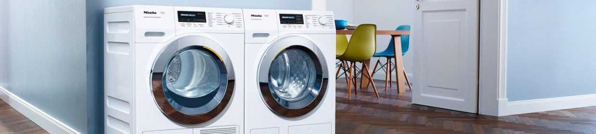

ПОДКЛЮЧЕНИЕ СТИРАЛЬНОЙ МАШИНЫ
Наши мастера оказывают услуги по профессиональному подключению стиральных машин.
+380 (95) 473-70-12
Обратная связь
ПОДКЛЮЧЕНИЕ СТИРАЛЬНОЙ МАШИНЫ

Наша компания оказывает услуги по подключению стиральных машин в Черновцах.
Правильное подключение стиральной машины – это залог её долгой и безопасной эксплуатации. Мы выполняем всё необходимое для подключения вашей стиральной машины (подключение воды, канализации и, при необходимости, электромонтажные работы).
Подключение стиральной машины только на первый взгляд кажется простым делом. В первую очередь, нужно определиться, была подключена стиральная машина или нет. Если до этого на месте установки была другая машинка, тогда сложностей в самостоятельном подключении возникнуть не должно. Но при установке стиральной машины нужно учитывать несколько важных факторов. Если вы подключаете самостоятельно, используя старые места подключений, не забудьте проверить работоспособность крана, заменить прокладки заливного шланга, а по возможности заменить шланг на новый. В зависимости от подключение сливного (гофрированного) шланга нужно учитывать, что если он идёт в канализацию, то следует заменить переходную манжету. Обратите внимание на сливной шланг, при выходе из стиральной машины он должен быть закреплён примерно по центру на корпусе машинки. Стиральная машина должна быть выставлена устойчиво (при нажатии на углы стиральной машины она не "гуляет"), это предотвратит вибрацию во время отжима.
ПРАВИЛА ПОДКЛЮЧЕНИЯ
Как правильно выбрать место, где подключить стиральную машину?
Если стиральная машина не была установлена до этого, то следует учесть несколько важных моментов.
В первую очередь определиться с месторасположением, учитывая что со временем машинку придётся двигать.
После этого понять какая у вас труба (из железа, пластик или подключена к бочку унитаза).
Наши мастера всегда рекомендуют устанавливать отдельный кран для подачи воды на стиральную машину.
Нужно всегда учитывать что рано или поздно машинку придётся выдвигать, поворачивать.
Для удобство заливной шланг стиральной машины должен всегда быть с запасом, чтобы в будущем было проще.
При подключении сливного шланга нужно определиться в каком месте у вас он будет.
В зависимости от вариантов подключения стиральной машины, нужно приобрести:
-Cифон с выводом под подключение (если это умывальник).
-Трубу с выводом под сливной шланг и не забыть приобрести переходную манжету под трубу (если это канализация).
Если квартира находится на первом или втором этаже, или у вас частный дом, то под сливной шланг желательно приобрести антисифон.
Антисифон для стиральных машин служит клапаном, предотвращающим неприятные запахи.
ПРАВИЛА ПЕРЕВОЗКИ
Как правильно перевозить стиральную машину?
При перевозке машинки нужно соблюдать ряд правил. Первым делом нужно почистить фильтр стиральной машины (служит как сифон, всегда остаётся до пол-литра воды). Перед перевозкой желательно закрутить транспортировочные болты для неподвижности бака при перевозке. Если нет возможности перевозить стиральную машинку стоя, то лучше положить машинку на бок с порошкоприёмником для предотвращения попадания остатков воды на модуль управления. Также при установке бу стиральной машины желательно произвести диагностику. При неправильной перевозке стиральной машины может потребоваться ремонт стиральной машины.
РАСШИФРОВКА ОШИБОК
Как определить ошибку и расшифровать её?
Если после установки стиральной машины она показывает ошибку, то, в первую очередь, нужно её расшифровать. Для простоты решения проблем с самостоятельным ремонтом стиральной машины мы собрали для вас ошибки стиральных машин.
МАРКИ СТИРАЛЬНЫХ МАШИН КОТОРЫЕ МЫ РЕМОНТИРУЕМ:
")